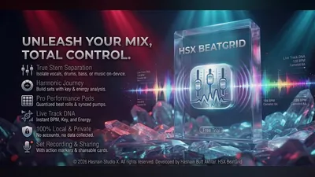
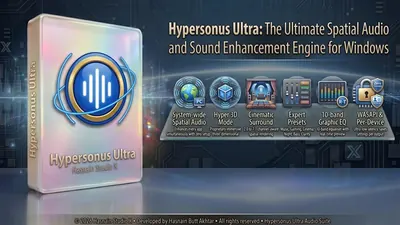
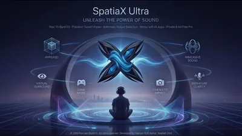
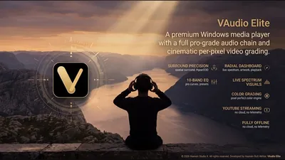

Audio enhancement and spatial sound apps for Windows
Better sound from the hardware you already have. Spatial audio for ordinary headphones, enhancement and equalisation across every app, and tools for making music, all processed on your own machine.
Why these run on your own machine
Audio processing has to happen where the sound is, which makes running locally the only sensible design rather than a privacy feature. There is nothing to upload and no account to sign into, and the effect is applied as the sound plays, with no round trip to anywhere.
What to check before you buy anything in this category
- Whether it works with your own headphones
- Good spatial audio works with ordinary stereo headphones and speakers, not just one brand of hardware.
- What it adds in delay
- Processing that lags behind the picture ruins films and games. Low latency matters more than a long list of presets.
- Whether it covers every app
- An enhancer that only works inside its own player is a player, not an enhancer.
5 audio applications available now

BeatGrid Studio Windows Local DJ mixing studio Twin-deck mixing with crossfade Reads your own local music library Record sets straight to disk Full details
Hypersonus Ultra Windows Cinematic surround, Hyper 3D, and 10-band EQ for every app System-wide WASAPI interception that enhances every app at once Hyper 3D and Spatial audio modes for cinematic immersion 10-band EQ with expert presets: Gaming, Cinema, Night Mode Full details
SpatiaX Ultra Windows Real-time 3D spatial audio engine for Windows 3D spatial surround for headphones and speakers Profiles for gaming, music, movies, and calls Smart audio routing and device selection Full details SpatiaX Ultra Mobile Android System-wide spatial sound and a 10-band equaliser Hyper3D spatial modes: Hyper Wide, Hyper Front and Hyper Hall UltraBass modes: Deep Sub and Punch Crystal clarity modes: Vocal Focus and Air Lift Full details
VAudio Elite Windows Media player with spatial audio and visualizers Spatial audio enhancement for headphones and speakers Built-in equalizer with cinema, music, and voice presets Reactive audio visualizers with multiple styles Full detailsQuestions about audio apps
Do I need special headphones?
No. The audio range works with ordinary stereo headphones and speakers, and each application explains what it supports on its own page.
Does it work with games and streaming?
Each application says on its own page whether it works on everything your PC plays or inside its own player.
Is any audio uploaded?
No. All processing runs on your own machine.
Is there a subscription?
No. Every application is a free trial followed by one purchase.
Other parts of the catalogue
Full Windows catalogue · Android catalogue · Privacy policies · About the studio
Hasnain Studio X™ is a trade mark of Hasnain Studio X. Product names shown on this page are trademarks of Hasnain Studio X.